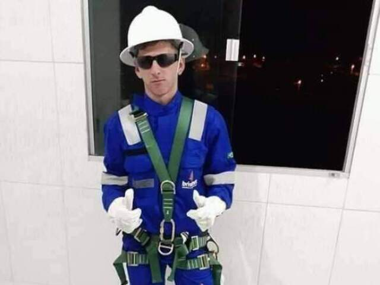

class= "container"

MESSI ELETRICISTA
𝕃𝕚𝕠𝕟𝕖𝕝 𝔸𝕟𝕕𝕣é𝕤 𝕄𝕖𝕤𝕤𝕚 ℂ𝕦𝕔𝕔𝕚𝕥𝕥𝕚𝕟𝕚 é 𝕦𝕞 𝕗𝕦𝕥𝕖𝕓𝕠𝕝𝕚𝕤𝕥𝕒 𝕒𝕣𝕘𝕖𝕟𝕥𝕚𝕟𝕠 𝕢𝕦𝕖 𝕒𝕥𝕦𝕒 𝕔𝕠𝕞𝕠 𝕒𝕥𝕒𝕔𝕒𝕟𝕥𝕖. 𝔸𝕥𝕦𝕒𝕝𝕞𝕖𝕟𝕥𝕖 𝕛𝕠𝕘𝕒 𝕡𝕖𝕝𝕠 𝕀𝕟𝕥𝕖𝕣 𝕄𝕚𝕒𝕞𝕚 𝕖 𝕡𝕖𝕝𝕒 𝕊𝕖𝕝𝕖çã𝕠 𝔸𝕣𝕘𝕖𝕟𝕥𝕚𝕟𝕒, 𝕠𝕟𝕕𝕖, 𝕒𝕥𝕦𝕒𝕟𝕕𝕠 𝕔𝕠𝕞𝕠 𝕔𝕒𝕡𝕚𝕥ã𝕠, 𝕧𝕖𝕟𝕔𝕖𝕦 𝕒 ℂ𝕠𝕡𝕒 𝕕𝕠 𝕄𝕦𝕟𝕕𝕠 𝕕𝕠 ℂ𝕒𝕥𝕒𝕣 𝕕𝕖 𝟚𝟘𝟚𝟚. 𝕎𝕚𝕜𝕚𝕡é𝕕𝕚𝕒
ℕ𝕒𝕤𝕔𝕚𝕞𝕖𝕟𝕥𝕠: 𝟚𝟜 𝕕𝕖 𝕛𝕦𝕟𝕙𝕠 𝕕𝕖 𝟙𝟡𝟠𝟟 (𝕚𝕕𝕒𝕕𝕖 𝟛𝟞 𝕒𝕟𝕠𝕤), ℝ𝕠𝕤á𝕣𝕚𝕠, 𝔸𝕣𝕘𝕖𝕟𝕥𝕚𝕟𝕒
𝔼𝕢𝕦𝕚𝕡𝕖𝕤 𝕒𝕥𝕦𝕒𝕚𝕤: 𝕀𝕟𝕥𝕖𝕣 𝕄𝕚𝕒𝕞𝕚 ℂ𝔽 (#𝟙𝟘 / 𝔸𝕥𝕒𝕔𝕒𝕟𝕥𝕖), 𝕊𝕖𝕝𝕖çã𝕠 𝔸𝕣𝕘𝕖𝕟𝕥𝕚𝕟𝕒 𝕕𝕖 𝔽𝕦𝕥𝕖𝕓𝕠𝕝 (#𝟙𝟘 / 𝔸𝕥𝕒𝕔𝕒𝕟𝕥𝕖)
ℂô𝕟𝕛𝕦𝕘𝕖: 𝔸𝕟𝕥𝕠𝕟𝕖𝕝𝕝𝕒 ℝ𝕠𝕔𝕔𝕦𝕫𝕫𝕠 (𝕕𝕖𝕤𝕕𝕖 𝟚𝟘𝟙𝟟)
𝔸𝕝𝕥𝕦𝕣𝕒: 𝟙,𝟟 𝕞
𝕊𝕒𝕝á𝕣𝕚𝕠: 𝟝𝟜 𝕞𝕚𝕝𝕙õ𝕖𝕤 𝕌𝕊𝔻 (𝟚𝟘𝟚𝟛)
𝕄𝕖𝕕𝕒𝕝𝕙𝕒 𝕕𝕖 𝕠𝕦𝕣𝕠: 𝔽𝕦𝕥𝕖𝕓𝕠𝕝 𝕟𝕠𝕤 𝕁𝕠𝕘𝕠𝕤 𝕆𝕝í𝕞𝕡𝕚𝕔𝕠𝕤 𝕕𝕖 𝕍𝕖𝕣ã𝕠 𝕕𝕖 𝟚𝟘𝟘𝟠 - 𝕄𝕒𝕤𝕔𝕦𝕝𝕚𝕟𝕠